حضور، فراتر از فاصلهبه دنیای
به دنیای
ربات خود متصل شوید.
یک فضای آرام برای ارتباط با ربات و اعضای سازمان.

خوش آمدید
CONNECTED SPACES
فضای ربات
همراه هوشمند شما، آماده شروع.
WELCOME
خوش آمدید.
در چند قدم کوتاه، ربات و فضای سازمان را آماده میکنیم.
نام رباتQR و سازماناتصال و تیم
قدم ۳ از ۵
ربات شما چه نام دارد؟
یک نام آشنا برای همراه هوشمندتان انتخاب کنید.
قدم ۴ از ۵
یک اسکن، یک اتصال.
QR صفحه ورود ربات است؛ برای تماس، ورود به حساب لازم است.
آخرین قدم
اتصال را آماده کنیم.
فضای سازمان شما
سلام، .
امروز از کجا شروع کنیم؟
تنظیمات
QR ربات
اطلاعات سازمان
لوگو، معرفی و فایل ساختمان؛ همه در همین بخش.